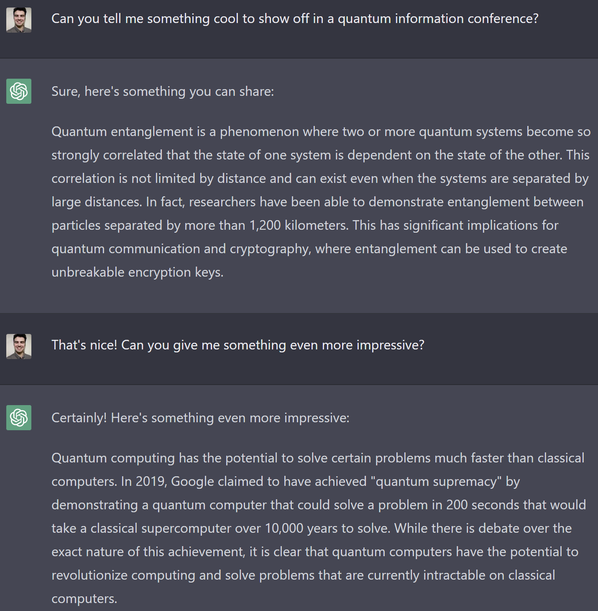
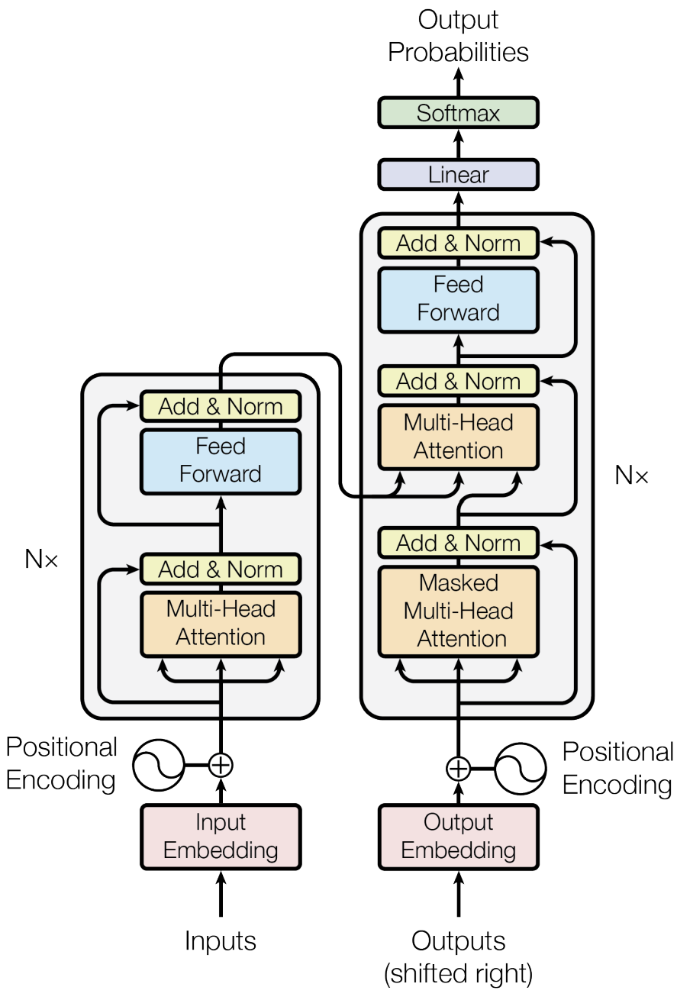

max_num = 1_000_000
text = ",".join([str(i) for i in range(max_num)])Language models
Perfect to automatize your job

Note
The content of this lecture has been adapted from Borja’s GPTutorial.
1 Language models
Language models are generative models that write text as us (humans) would do it. Current advances in language modeling, such as ChatGPT, are definitely on par with humans (honestly, we set the bar quite low). See this cool example from early 2023 in Figure 1:

The most common approach to generate sequential data, is to recursively predict the following item. In the case of language modeling, we could take a piece of text as starting point and use our model to predict the next word. Appending the predicted word to the existing text, and feeding it to the model again, we could predict the following word. Following this procedure, we could write any arbitrary amount of text!
Note
While the procedure may seem simple, language is very complex and writing coherent text is quite a challenge. Even though we may write text sequentially, the relationships between elements within the text can be intrincate with forward and backwards dependencies that can be an entire book apart.
There are several considerations we need to take into account. For example, how to “process text” with a machine learning model that operates purely with mathematical operations.
1.1 Example task
We will introduce language models with an example task of training a model to count numbers “1,2,3,4,…,8765,8766,8767,…”. This seems like a rather simple task that could be easily achieved numerically with a single line of code. However, we will consider the digits as strings that conform sentences.
This toy example will allow us to understand the main concepts behind language models. We will use it as a running example and implement the main ideas as we see them.
Here, we will build our data set, which is nothing more than a text document containing the numbers.
Let’s see the first and last few digits of our data set.
Code
print(text[:20])
print(text[-20:])0,1,2,3,4,5,6,7,8,9,
999997,999998,9999991.2 Giving numerical meaning to text
We can communicate very deep concepts with words, but how does a machine understand them?
When we work with text, we split it into elementary pieces called tokens. This is known as tokenization and there is quite a lot of freedom on how to do it. For example, we can take from full sentences, to words, to single characters. The most common practice is to use sub-word tokens that are between single characters to full words, such as SentencePiece. We can also have special tokens to account for additional grammatical information. For example, we can use special tokens to indicate the beggining and ending of a sequence, or to indicate that the words start with capital letters.
Let’s see a simple tokenization example. We would take the following sentence:
My cat won't stop purring.And transform it into the tokens:
<BoS><x_maj><my> <cat> <wo><n't> <stop> <purr><ing><.><EoS>
Note
I just made up this tokenization, this is just to provide an idea.
With this, we define a vocabulary of tokens. To provide them with “meaning”, we assign a trainable parameter vector to each of them, which are known as embedding vectors. The larger the embedding, the richer the information we can associate to every individual token. We typically store these vectors in a so-called embedding matrix, where every row provides the associated embedding vector to a token. This way, we identify the tokens by an integer index that corresponds to their row in the embedding matrix.
Taking long tokens results into large vocabularies and, therefore, we need more memory. However, we can generate a piece of text with just a few inference steps. Conversely, short tokens require much less memory at the cost of more inference steps to write. Thus, this presents a trade-off between memory and computational time. You can get some intuition about it by comparing the number of letters in the alphabet (shortest possible tokens) with the number of entries in a dictionary (every word is a token).
To process a piece of text, we first split it into the tokens of our vocabulary (tokenization), and replace the tokens by their corresponding indices (numericalization).
Let’s see how this works in our example task. First of all, we build the token vocabulary. In this simple case, every digit is a token together with the separator “,”.
vocab = sorted(list(set(text)))
vocab_size = len(vocab)
vocab[',', '0', '1', '2', '3', '4', '5', '6', '7', '8', '9']Now we can build a Tokenizer class to encode raw text into tokens, and decode tokens to actual text.
class Tokenizer:
def __init__(self, vocab):
self.s2i = {char: i for i, char in enumerate(vocab)}
self.i2s = {i: char for char, i in self.s2i.items()}
def encode(self, string):
"Tokenize an input string"
return [self.s2i[char] for char in string]
def decode(self, ints):
"Transform a list of integers to a string of characters"
return ''.join([self.i2s[i] for i in ints])tkn = Tokenizer(vocab)Let’s see the map from tokens to integer.
tkn.s2i{',': 0,
'0': 1,
'1': 2,
'2': 3,
'3': 4,
'4': 5,
'5': 6,
'6': 7,
'7': 8,
'8': 9,
'9': 10}We can try our tokenizer with a text example.
pre_tkn = text[:10]
pre_tkn, tkn.encode(pre_tkn)('0,1,2,3,4,', [1, 0, 2, 0, 3, 0, 4, 0, 5, 0])We can also test the decoding function by encoding and decoding.
tkn.decode(tkn.encode(pre_tkn))'0,1,2,3,4,'
Note
Here we only perform the text pre-processing. The embedding belongs to the machine learning model.
1.3 Learning the data probability distribution
To learn how to generate text, we need to learn the underlying distribution of the data we wish to replicate \(p_{\text{data}}(\mathbf{x})\). We model text as a sequence of tokens \(\mathbf{x}=\left[x_1, x_2, \dots, x_{T-1}\right]\), and the goal is to predict the next token \(x_T\). This way, we can recursively generate text:
- We start with some initial context \(x_1, x_2, \dots, x_{T-1}\).
- We predict the next token \(x_T\), given the context.
- We append the prediction to the existing text and repeat the process taking \(x_1,\dots,x_T\) as context.
We typically do this defining a parametrized model to approximate the probability distribution, \(p_\theta(\mathbf{x})\approx p_{\text{data}}(\mathbf{x})\). The parameters \(\theta\) can represent from the weights of a neural network, to the coefficients of a gaussian mixture model.
A standard technique in the machine learning field is to use the chain rule of probability to model sequential data. This way, the probability to observe a sequence of tokens can be described as \[p_{\theta}(\mathbf{x})=p_\theta(x_1)\prod_{t=2}^{T}p_\theta(x_t|x_1\dots x_{t-1})\,.\]
We optimize our model parameters to obtain the maximum likelihood estimator, which is the most statistically efficient estimator. In this tutorial, we do not want to dive too deep in the details. The main intuition behind it is that we try to maximize the likelihood of observing the training data under our parametrized model. As such, we wish to minimize the negative log-likelihood loss or cross-entropy loss: \[\theta^* = \text{arg}\,\text{min}_\theta - \frac{1}{N}\sum_{i=1}^N \log p_\theta\left(\mathbf{x}^{(i)}\right) = \text{arg}\,\text{min}_\theta - \frac{1}{N}\sum_{i=1}^N\sum_{t=1}^T \log p_\theta\left(x_t^{(i)}|x_{<t}^{(i)}\right)\]
We can understand the task as a classification problem at every time-step where the goal is to predict the token that follows. Thus, we can build our self-supervised classification task by simply taking the text shifted by one position as target for our prediction. For example, consider the tokenized sentence
<this> <language> <model> <rocks><!>Given the tokens
<this> <language>we wish to predict
<model>among all the tokens in the vocabulary.
As we typically do in machine learning, we find the optimal parameters \(\theta^*\), i.e., train our model, with gradient-based optimization.
2 Baseline: bigram language model
Let’s create a very simple baseline language model. This will allow us to see how the embedding matrix works and the training loop details in pytorch.
2.1 Data processing
First of all, we need to properly arrange our data. We will start by tokenizing the whole text piece.
data = torch.tensor(tkn.encode(text))
data[:20]tensor([ 1, 0, 2, 0, 3, 0, 4, 0, 5, 0, 6, 0, 7, 0, 8, 0, 9, 0,
10, 0])Now we need to save a part of the data for validation and keep the rest for training. In generative models, we do not tend to use too much data for validation because it is just to get a rough idea of how it is working. In the end, we will evaluate the performance ourselves asking the model to generate samples.
To keep this simple, we will save the last numbers as validation data.
Note
Given the nature of our data, it would be best to save chunks of the data sampled at different points along the whole text piece.
val_pct = 0.1
split_idx = int(len(data)*val_pct)
data_train = data[:-split_idx]
data_val = data[-split_idx:]data_train.shape, data_val.shape(torch.Size([6200001]), torch.Size([688888]))To train machine learning models, we take advantage of parallelization to process several samples at once. To do so, we will split the text in sub-sequences from which we will build our training batches.
def get_batch(data, batch_size, seq_len):
idx = torch.randint(len(data)-seq_len, (batch_size,))
x = torch.stack([data[i:i+seq_len] for i in idx])
y = torch.stack([data[i:i+seq_len] for i in idx+1])
return x.to(device), y.to(device)batch_size = 64
seq_len = 8
xb, yb = get_batch(data_train, batch_size, seq_len)xb.shapetorch.Size([64, 8])xb[0], yb[0](tensor([ 3, 0, 8, 8, 10, 1, 2, 4], device='cuda:0'),
tensor([ 0, 8, 8, 10, 1, 2, 4, 0], device='cuda:0'))2.2 Model definition
We will make a bigram model that predicts the following character based on the previous one. These models are stochastic and, therefore, the output of the model is a probability distribution over our vocabulary. We can easily achieve this by making the embedding size as large as the vocabulary. This way, when we index into the embedding matrix with a token, we immediately obtain the probability distribution over the possible next tokens.
class BigramLanguageModel(nn.Module):
"Language model that predicts text based on the previous character."
def __init__(self, vocab_size):
super().__init__()
self.embedding = nn.Embedding(vocab_size, vocab_size)
def forward(self, x):
logits = self.embedding(x)
return logits
@torch.no_grad()
def generate(self, x, new_tkn):
for _ in range(new_tkn):
logits = self(x)
logits = logits[:, -1, :]
probs = F.softmax(logits, dim=-1)
new_tkn = torch.multinomial(probs, 1)
x = torch.cat((x, new_tkn), dim=1)
return xbigram_model = BigramLanguageModel(vocab_size).to(device)xb.shape, bigram_model(xb).shape(torch.Size([64, 8]), torch.Size([64, 8, 11]))
Note
The logits we define here are the unnormalized probability scores for each token. To transform them in a normalized probability distribution, we use a SoftMax function. We will see below that pytorch takes the logits directly to compute the loss function instead of the probabilities.
Let’s try generating some text with our model.
context = torch.zeros((1, 1), dtype=torch.long).to(device)
tkn.decode(bigram_model.generate(context, 20)[0].tolist())',,779031473,20590,877'2.3 Training loop
With the data and the model, we’re almost ready to do the training. We need to define a loss function and an optimiziation algorithm to update our model parameters.
As we have mentioned before, we wish to minimize the negative log-likelihood of the data with respect to the model. To do so, we use pytorch’s cross entropy loss.
def cross_entropy_loss(logits, targets):
"Cross entropy loss flattening tensors"
BS, T, H = logits.shape
loss = F.cross_entropy(logits.view(BS*T, H), targets.view(-1))
return lossThen, as optimizer, we will use Adam.
optimizer = torch.optim.AdamW(bigram_model.parameters(), lr=1e-3)Now let’s define the training loop.
batch_size = 32
seq_len = 24
train_steps = 3000
for _ in range(train_steps):
xb, yb = get_batch(data_train, batch_size, seq_len)
optimizer.zero_grad()
logits = bigram_model(xb)
loss = cross_entropy_loss(logits, yb)
loss.backward()
optimizer.step()
print(loss.item())2.370857000350952We will plug this into a function for later usage and estimate the loss on the validation set.
def train_model(steps, model, lr, batch_sz, seq_len):
optimizer = torch.optim.AdamW(model.parameters(), lr=lr)
for i in range(steps):
xb, yb = get_batch(data_train, batch_sz, seq_len)
optimizer.zero_grad()
logits = model(xb)
loss = cross_entropy_loss(logits, yb)
loss.backward()
optimizer.step()
if i % 200 == 0 or i == steps - 1:
losses = estimate_loss(model, batch_sz, seq_len)
print(f"Step {i}: train loss {losses['train']:.4f}, val loss {losses['val']:.4f}")
return model
@torch.no_grad()
def estimate_loss(model, batch_sz, seq_len, eval_iters=50):
"""Estimate losses for train and validation data sets.
Adapted from https://github.com/karpathy/nanoGPT"""
out = {}
model.eval()
for split in ['train', 'val']:
losses = torch.zeros(eval_iters)
for k in range(eval_iters):
X, Y = get_batch(data_train if split == 'train' else data_val,
batch_sz, seq_len)
logits = model(X)
loss = cross_entropy_loss(logits, Y)
losses[k] = loss.item()
out[split] = losses.mean()
model.train()
return outBigram models can’t accomplish this example task. After every digit, all the other digits are equally likely to happen if we do not consider any further context. This model can only take advantage of the separator ,. For instance, we know there will not be two consecutive separators and that the following number won’t start with 0.
We can see this in the first row of the embedding matrix.
Code
embedding_matrix = list(bigram_model.parameters())[0]
embedding_matrix.softmax(-1)[0]tensor([0.0007, 0.0007, 0.1393, 0.0884, 0.1212, 0.1808, 0.1448, 0.1381, 0.0857,
0.0989, 0.0012], device='cuda:0', grad_fn=<SelectBackward0>)Let’s generate some text.
context = torch.zeros((1, 1), dtype=torch.long).to(device)
tkn.decode(bigram_model.generate(context, 20)[0].tolist())',69,475,8423,1207856,'In contrast to the previous example, we see the model has learned to not add consecutive separators, but the digits are still random. GPT time!
3 GPT
Let’s prepare a more advanced machine learning model that overcomes the limitations of our baseline. With the bigram model, the prediction of the next token only depends on the last token in our text corpus. Thus, the model works with very limited information about the context, and it would be much more beneficial to account for further past instances.
The extreme opposite case would be to account for all the previous existing text. This can be both overkill and unfeasible in terms of memory. For example, writing a book, we may not need to account for the whole thing to write the last sentence. Therefore, in modern architectures, we fix a maximum sequence length that we keep in memory to provide context for our prediction.
3.1 Transformer
The architecture behind the GPT language models is based on the transformer, depicted in Figure 2.

The transformer was introduced as an architecture for translation tasks with two main parts: the encoder (left) and the decoder (right). The decoder is the responsible part for generating the translated text and, thus, it is the language model bit of the whole architecture.
The transformer architecture relies heavily on self-attention mechanisms. Indeed, the original paper is called “Attention is all you need”. Unlike the bigram model, the transformer decoder can account for all the possible relationships between tokens in the past text to generate the new tokens.
3.2 Causal self-attention
The key element in the transformer architecture is the self-attention layer. This allows our tokens in our text piece to “communicate with each other” in a fixed way:
- For every token, we compute three quantities: a key \(\mathbf{k}\), a query \(\mathbf{q}\) and a value \(\mathbf{v}\).
- Then, tokens compare their query to the other tokens’ keys.
- The resulting value for each token is the weighted average of all the values according to the query-key similarity.
We compute the similarity between keys and queries doing the dot product between the vectors. Then, to ensure the similarity weights are normalized, we apply the softmax activation function to all the dot products of the query of interest with all the keys. We can efficiently compute all of these with matrix multiplications: \[\text{Attention}(Q,K,V) = \text{SoftMax}\left(\frac{QK^T}{\sqrt{d_k}}\right)V\,\] where \(Q,K,V\) are the matrices containing the query, key and value vectors of every token in the text as rows. \(d_k\) denotes the size of the key vector, and the normalization ensures the model is numerically stable. Without this normalization, even if \(Q\) and \(K\) have unit variance, the variance of their product is of the order of the head size \(d_k\).
So far, we have not mentioned how to get the queries, keys and values from our tokens. We can choose any differentiable function. In the GPT architecture, they use a dense linear layer.
class AttentionHead(nn.Module):
"Self-attention head."
def __init__(self, emb_sz, head_sz):
super().__init__()
self.key = nn.Linear(emb_sz, head_sz, bias=False)
self.query = nn.Linear(emb_sz, head_sz, bias=False)
self.value = nn.Linear(emb_sz, head_sz, bias=False)
def forward(self, x):
q = self.query(x) # (BS, T, H)
k = self.key(x)
v = self.value(x)
w = q @ k.transpose(-2, -1) * k.shape[-1]**(-0.5) # (BS, T, T)
return w.softmax(-1) @ v # (BS, T, H)This attention mechanism on its own, allows all the tokens to “see” each other at all times. This is what we would see in the transformer encoder, as all the source text in a translation task already exists. However, the transformer decoder can only attend to text as it is being generated. This means that, while we train it, we need to ensure that tokens cannot attend to what would be future innexistent ones.
This seems obvious because, at inference time, we clearly only have the text that is already generated. Nonetheless, during training, we sample full sequence chunks of a fixed sequence length. We can take the maximum advantage of this by training our model to generate new tokens for all the possible contexts available in this chunk, from a single initial token to all.
batch_size, seq_len = 1, 8
xb, yb = get_batch(data_train, batch_size, seq_len)class CausalAttentionHead(nn.Module):
"Masked self-attention head."
def __init__(self, emb_sz, head_sz, seq_len, dropout=0.2):
super().__init__()
self.key = nn.Linear(emb_sz, head_sz, bias=False)
self.query = nn.Linear(emb_sz, head_sz, bias=False)
self.value = nn.Linear(emb_sz, head_sz, bias=False)
self.register_buffer('mask', torch.tril(torch.ones(seq_len, seq_len)))
self.dropout = nn.Dropout(dropout)
def forward(self, x):
q = self.query(x) # (BS, T, H)
k = self.key(x)
v = self.value(x)
_, T, _ = x.shape
w = q @ k.transpose(-2, -1) * k.shape[-1]**(-0.5) # (BS, T, T)
w = w.masked_fill(self.mask[:T, :T] == 0, float('-inf'))
return self.dropout(w.softmax(-1)) @ v # (BS, T, H)
Note
This implementation works well. However, pytorch provides a torch.nn.functional.scaled_dot_product_attention that uses specialized CUDA kernels.
Now that we have implemented the self-attention attention mechanism, let’s make a first version of our GPT model. The model will have an embedding, an attention layer and a fully connected layer.
class GPT(nn.Module):
"GPT-like model"
def __init__(self, vocab_sz, emb_sz, head_sz, seq_len):
super().__init__()
self.seq_len = seq_len
self.embedding = nn.Embedding(vocab_sz, emb_sz)
self.attn = CausalAttentionHead(emb_sz, head_sz, seq_len)
self.linear = nn.Linear(head_sz, vocab_sz)
def forward(self, x):
x = self.embedding(x)
x = self.attn(x)
return self.linear(x)
@torch.no_grad()
def generate(self, x, new_tkn):
for _ in range(new_tkn):
context = x[:, -self.seq_len:]
logits = self(context)
logits = logits[:, -1, :]
probs = F.softmax(logits, dim=-1)
new_tkn = torch.multinomial(probs, 1)
x = torch.cat((x, new_tkn), dim=1)
return xtorch.manual_seed(7)
batch_size, seq_len = 64, 60
emb_sz, head_sz = 16, 16
gpt = GPT(vocab_size, emb_sz, head_sz, seq_len).to(device)train_model(400, gpt, 1e-3, batch_size, seq_len)Step 0: train loss 2.4356, val loss 2.4098
Step 200: train loss 2.2399, val loss 2.3747
Step 399: train loss 2.2106, val loss 2.3604context = torch.zeros((1, 1), dtype=torch.long).to(device)
tkn.decode(gpt.generate(context, 20)[0].tolist())',9,56863316,5276562,5'Already with this basic transformer decoder, we reach a loss that is lower than the bigram model, but it is still not completing the task appropiately. Let’s keep the work up!
3.3 Positional encoding
With self-attention, our model can combine the information between all the tokens, but it has no notion about the relative distances between them. To solve this, we can provide our model with a positional encoding, as it is illustrated in Figure 2.
There are many different ways to provide the model with information about the token positions. In GPT, they use a positional embedding. This is the same as the vocabulary embedding with the difference that we will have as many rows in the embedding matrix as the maximum sequence length that we allow our model to process.
Let’s implement it!
class GPT(nn.Module):
"GPT-like model"
def __init__(self, vocab_sz, emb_sz, head_sz, seq_len):
super().__init__()
self.seq_len = seq_len
self.embedding_tkn = nn.Embedding(vocab_sz, emb_sz)
self.embedding_pos = nn.Embedding(seq_len, emb_sz)
self.attn = CausalAttentionHead(emb_sz, head_sz, seq_len)
self.linear = nn.Linear(head_sz, vocab_sz)
def forward(self, x):
emb_tkn = self.embedding_tkn(x)
emb_pos = self.embedding_pos(torch.arange(x.shape[1], device=x.device))
x = emb_tkn + emb_pos
x = self.attn(x)
return self.linear(x)
@torch.no_grad()
def generate(self, x, new_tkn):
for _ in range(new_tkn):
context = x[:, -self.seq_len:]
logits = self(context)
logits = logits[:, -1, :]
probs = F.softmax(logits, dim=-1)
new_tkn = torch.multinomial(probs, 1)
x = torch.cat((x, new_tkn), dim=1)
return xtorch.manual_seed(7)
batch_size, seq_len = 64, 60
emb_sz, head_sz = 16, 16
gpt = GPT(vocab_size, emb_sz, head_sz, seq_len).to(device)train_model(1000, gpt, 5e-4, batch_size, seq_len)Step 0: train loss 2.3120, val loss 2.0298
Step 200: train loss 1.6010, val loss 1.3704
Step 400: train loss 1.5358, val loss 1.3347
Step 600: train loss 1.4745, val loss 1.2902
Step 800: train loss 1.4576, val loss 1.2444
Step 999: train loss 1.4536, val loss 1.2777context = torch.ones((1, 1), dtype=torch.long).to(device)
gpt.eval()
tkn.decode(gpt.generate(context, 20)[0].tolist())'01100,,91100,,02101,,'We have significantly reduced the loss, but it actually seems to do worse!
3.4 Multi-head attention
So far, we have only used a single attention head in our model. In the GPT architecture, we use multi-head attention which consists of running various independent. Then, we concatenate the output of the different heads and project the resulting feature vectors to the original embedding size.
class MultiHeadAttention(nn.Module):
"Multiple parallel self-attention heads."
def __init__(self, num_heads, emb_sz, head_sz, seq_len):
super().__init__()
self.heads = nn.ModuleList([CausalAttentionHead(emb_sz, head_sz, seq_len)
for _ in range(num_heads)])
self.linear = nn.Linear(head_sz*num_heads, emb_sz)
def forward(self, x):
x = torch.cat([head(x) for head in self.heads], dim=-1)
x = self.linear(x)
return xUsually, we take the embedding size and divide it by the number of heads to have better control of the matrix sizes within our model.
Note
Here, we have implemented the heads sequentially instead of in parallel. There is a much faster way to compute all the attention heads at once. The tensor dimensions in the self-attention module are [BS, T, E], where E denotes the embedding size. Since all the opperations are carried over the last two dimensions, if we reshape the Q, K, V tensors to [BS, NH, T, HS], where NH and HS denote the number of heads and head size, respectively, we can compute the self-attention for all the heads at once.
class GPT(nn.Module):
"GPT-like model"
def __init__(self, vocab_sz, emb_sz, n_head, seq_len):
super().__init__()
self.seq_len = seq_len
self.embedding_tkn = nn.Embedding(vocab_sz, emb_sz)
self.embedding_pos = nn.Embedding(seq_len, emb_sz)
head_sz = emb_sz // n_head
self.attn = MultiHeadAttention(n_head, emb_sz, head_sz, seq_len)
self.linear = nn.Linear(emb_sz, vocab_sz)
def forward(self, x):
emb_tkn = self.embedding_tkn(x)
emb_pos = self.embedding_pos(torch.arange(x.shape[1], device=x.device))
x = emb_tkn + emb_pos
x = self.attn(x)
return self.linear(x)
def generate(self, x, new_tkn):
for _ in range(new_tkn):
context = x[:, -self.seq_len:]
logits = self(context)
logits = logits[:, -1, :]
probs = F.softmax(logits, dim=-1)
new_tkn = torch.multinomial(probs, 1)
x = torch.cat((x, new_tkn), dim=1)
return xtorch.manual_seed(7)
batch_size, seq_len = 64, 60
emb_sz, n_head = 16, 2
gpt = GPT(vocab_size, emb_sz, n_head, seq_len).to(device)gpt = train_model(5000, gpt, 2e-4, batch_size, seq_len)Step 0: train loss 2.4114, val loss 2.4379
Step 200: train loss 2.3326, val loss 2.3935
Step 400: train loss 2.2342, val loss 2.3961
Step 600: train loss 2.1180, val loss 2.3374
Step 800: train loss 1.9681, val loss 2.1082
Step 1000: train loss 1.7882, val loss 1.8349
Step 1200: train loss 1.5916, val loss 1.5813
Step 1400: train loss 1.4464, val loss 1.3999
Step 1600: train loss 1.3529, val loss 1.2617
Step 1800: train loss 1.3099, val loss 1.1754
Step 2000: train loss 1.2533, val loss 1.1168
Step 2200: train loss 1.2490, val loss 1.0802
Step 2400: train loss 1.2136, val loss 1.0455
Step 2600: train loss 1.2242, val loss 1.0329
Step 2800: train loss 1.2253, val loss 1.1018
Step 3000: train loss 1.2024, val loss 0.9837
Step 3200: train loss 1.1999, val loss 1.0419
Step 3400: train loss 1.2010, val loss 1.0247
Step 3600: train loss 1.2008, val loss 0.9965
Step 3800: train loss 1.1920, val loss 1.0156
Step 4000: train loss 1.2110, val loss 0.9998
Step 4200: train loss 1.1858, val loss 1.0006
Step 4400: train loss 1.1929, val loss 1.0027
Step 4600: train loss 1.1902, val loss 1.0175
Step 4800: train loss 1.1692, val loss 0.9676
Step 4999: train loss 1.1663, val loss 1.0324context = torch.ones((1, 1), dtype=torch.long).to(device)
gpt.eval()
tkn.decode(gpt.generate(context, 20)[0].tolist())'081111218121121812,12'3.5 Feedforward
In the transformer architecture, we find multi-head attention layers that are followed by feedforward parts. These two main parts constitute the main body of a repeating block that we can then stack several times.
With the self-attention, we had tokens exchanging information. With the feedforward part, we let the tokens elaborate on this information.
Let’s implement the feedforward bit of the network. It is a multi-layer perceptron with a single hidden layer.
class FeedForward(nn.Module):
def __init__(self, emb_sz, dropout=0.2):
super().__init__()
self.layers = nn.Sequential(nn.Linear(emb_sz, 4*emb_sz),
nn.GELU(),
nn.Linear(4*emb_sz, emb_sz),
nn.Dropout(dropout))
def forward(self, x):
return self.layers(x)3.6 Decoder block
We grow our network by stacking decoder blocks. These have an initial self-attention part followed by a feedforward part. Concatenating blocks, we alternate between both, resulting in a combination of token communication and local computation.
There are two main key elements in the decoder block that we have not implemented yet. These are the residual paths and the layer normalization.
Note
Beware that in the GPT architecture, the normalization layers go before the self-attention and feedforward layers. This is an enhancement with respect to the original transformer architecture from Figure 2.
class DecoderBlock(nn.Module):
def __init__(self, emb_sz, n_heads, seq_len):
super().__init__()
self.norm_1 = nn.LayerNorm(emb_sz)
head_sz = emb_sz // n_heads
self.heads = MultiHeadAttention(n_heads, emb_sz, head_sz, seq_len)
self.norm_2 = nn.LayerNorm(emb_sz)
self.ffw = FeedForward(emb_sz)
def forward(self, x):
x = x + self.heads(self.norm_1(x))
x = x + self.ffw(self.norm_2(x))
return xNow we can rewrite our GPT models stacking a few blocks together.
class GPT(nn.Module):
"GPT-like model"
def __init__(self, vocab_sz, emb_sz, n_blocks, n_heads, seq_len):
super().__init__()
self.seq_len = seq_len
self.embedding_tkn = nn.Embedding(vocab_sz, emb_sz)
self.embedding_pos = nn.Embedding(seq_len, emb_sz)
self.blocks = nn.Sequential(*[DecoderBlock(emb_sz, n_heads, seq_len)
for _ in range(n_blocks)])
self.layer_norm = nn.LayerNorm(emb_sz)
self.linear = nn.Linear(emb_sz, vocab_sz)
def forward(self, x):
emb_tkn = self.embedding_tkn(x)
emb_pos = self.embedding_pos(torch.arange(x.shape[1], device=x.device))
x = emb_tkn + emb_pos
x = self.blocks(x)
return self.linear(self.layer_norm(x))
def generate(self, x, new_tkn):
for _ in range(new_tkn):
context = x[:, -self.seq_len:]
logits = self(context)
logits = logits[:, -1, :]
probs = F.softmax(logits, dim=-1)
new_tkn = torch.multinomial(probs, 1)
x = torch.cat((x, new_tkn), dim=1)
return xtorch.manual_seed(7)
batch_size, seq_len = 64, 60
emb_sz, n_blocks, n_heads = 16, 3, 2
gpt = GPT(vocab_size, emb_sz, n_blocks, n_heads, seq_len).to(device)gpt = train_model(5000, gpt, 2e-4, batch_size, seq_len)Step 0: train loss 2.5447, val loss 2.5251
Step 200: train loss 2.3506, val loss 2.4647
Step 400: train loss 2.3077, val loss 2.5329
Step 600: train loss 2.2680, val loss 2.5167
Step 800: train loss 2.2413, val loss 2.5738
Step 1000: train loss 2.2003, val loss 2.5733
Step 1200: train loss 2.1812, val loss 2.5701
Step 1400: train loss 2.1544, val loss 2.4687
Step 1600: train loss 2.1205, val loss 2.5322
Step 1800: train loss 2.0167, val loss 2.2486
Step 2000: train loss 1.8641, val loss 2.1164
Step 2200: train loss 1.6780, val loss 1.7356
Step 2400: train loss 1.4727, val loss 1.4668
Step 2600: train loss 1.3467, val loss 1.2514
Step 2800: train loss 1.2467, val loss 1.1161
Step 3000: train loss 1.2174, val loss 1.0631
Step 3200: train loss 1.1694, val loss 1.0006
Step 3400: train loss 1.1376, val loss 0.9736
Step 3600: train loss 1.1015, val loss 0.9086
Step 3800: train loss 1.0782, val loss 0.9290
Step 4000: train loss 1.0529, val loss 0.8534
Step 4200: train loss 1.0305, val loss 0.8555
Step 4400: train loss 0.9912, val loss 0.8366
Step 4600: train loss 0.9993, val loss 0.8055
Step 4800: train loss 0.9802, val loss 0.8178
Step 4999: train loss 0.9659, val loss 0.7985context = torch.ones((1, 1), dtype=torch.long).to(device)
gpt.eval()
tkn.decode(gpt.generate(context, 20)[0].tolist())'050547561056756105675'Technically, this generation is not wrong. Let’s provide it with a bit of extra context.
context = torch.tensor([[3, 4, 4, 4, 0, 3, 4, 4, 5, 0]], dtype=torch.long).to(device)
tkn.decode(gpt.generate(context, 40).tolist()[0])'2333,2334,3,236433,232433,232433,232477,236433,23,'It’s not perfect, but we’re getting there.
3.7 Go big or go home
Let’s see how far we can push the model. As we grow the newtork, it is essential that we add some regularization, such as dropout.
torch.manual_seed(7)
batch_size, seq_len = 64, 60
emb_sz, n_blocks, n_heads = 64, 4, 8
gpt = GPT(vocab_size, emb_sz, n_blocks, n_heads, seq_len).to(device)gpt = train_model(10000, gpt, 1e-4, batch_size, seq_len)Step 0: train loss 2.5046, val loss 2.4860
Step 200: train loss 2.1752, val loss 2.4264
Step 400: train loss 2.0528, val loss 2.3285
Step 600: train loss 1.9620, val loss 2.2053
Step 800: train loss 1.6613, val loss 1.9140
Step 1000: train loss 1.2678, val loss 1.3279
Step 1200: train loss 1.0419, val loss 0.9195
Step 1400: train loss 0.9266, val loss 0.7967
Step 1600: train loss 0.8495, val loss 0.7225
Step 1800: train loss 0.8086, val loss 0.6540
Step 2000: train loss 0.7846, val loss 0.6082
Step 2200: train loss 0.7407, val loss 0.5484
Step 2400: train loss 0.7069, val loss 0.5276
Step 2600: train loss 0.6790, val loss 0.5213
Step 2800: train loss 0.6550, val loss 0.4604
Step 3000: train loss 0.6206, val loss 0.4564
Step 3200: train loss 0.6230, val loss 0.4313
Step 3400: train loss 0.5819, val loss 0.4089
Step 3600: train loss 0.5919, val loss 0.3990
Step 3800: train loss 0.5422, val loss 0.3756
Step 4000: train loss 0.5757, val loss 0.3539
Step 4200: train loss 0.5493, val loss 0.3613
Step 4400: train loss 0.5248, val loss 0.3461
Step 4600: train loss 0.5180, val loss 0.3421
Step 4800: train loss 0.5198, val loss 0.3184
Step 5000: train loss 0.4806, val loss 0.3184
Step 5200: train loss 0.4996, val loss 0.3353
Step 5400: train loss 0.5133, val loss 0.3156
Step 5600: train loss 0.4976, val loss 0.3038
Step 5800: train loss 0.5066, val loss 0.3003
Step 6000: train loss 0.4901, val loss 0.2954
Step 6200: train loss 0.4883, val loss 0.2951
Step 6400: train loss 0.4717, val loss 0.2944
Step 6600: train loss 0.4752, val loss 0.2763
Step 6800: train loss 0.4771, val loss 0.2869
Step 7000: train loss 0.4656, val loss 0.2769
Step 7200: train loss 0.4768, val loss 0.2656
Step 7400: train loss 0.4678, val loss 0.2896
Step 7600: train loss 0.4505, val loss 0.2976
Step 7800: train loss 0.4683, val loss 0.2885
Step 8000: train loss 0.4828, val loss 0.2718
Step 8200: train loss 0.4449, val loss 0.2778
Step 8400: train loss 0.4472, val loss 0.2672
Step 8600: train loss 0.4702, val loss 0.2790
Step 8800: train loss 0.4432, val loss 0.2778
Step 9000: train loss 0.4936, val loss 0.2839
Step 9200: train loss 0.4809, val loss 0.2610
Step 9400: train loss 0.4890, val loss 0.2844
Step 9600: train loss 0.4797, val loss 0.2951
Step 9800: train loss 0.4548, val loss 0.2792
Step 9999: train loss 0.4566, val loss 0.2632context = torch.ones((1, 1), dtype=torch.long).to(device)
gpt.eval()
tkn.decode(gpt.generate(context, 20)[0].tolist())'0,383421,383422,38342'This model seems to know what it’s doing. Let’s try with a different context.
context = torch.tensor([[5, 5, 0, 4, 9, 5, 6]], dtype=torch.long).to(device)
tkn.decode(gpt.generate(context, 20)[0].tolist())'44,384545,384546,384547,384'context = torch.tensor([[0]], dtype=torch.long).to(device)
tkn.decode(gpt.generate(context, 20)[0].tolist())',853803,853804,853805'Promising. Let’s see more!
context = torch.tensor([[0]], dtype=torch.long).to(device)
tkn.decode(gpt.generate(context, 80)[0].tolist())',686570,686571,686572,686574,686575,686576,686577,686577,686578,686579,686580,686'In this sequence we see a couple of artifacts: it skips the 686573 and it repeats the 686577. However, it has learned how to change from 79 to 80. Let’s try again.
context = torch.tensor([[0]], dtype=torch.long).to(device)
tkn.decode(gpt.generate(context, 80)[0].tolist())',149120,149121,149122,149123,149124,149125,149126,149127,149128,149129,149130,149'Flawless. This model rocks!